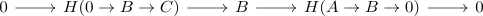

Homology of a chopped short exact sequence
Proposition
Let $\mathcal{A}$ be an additive category and
\begin{displaymath}
\begin{tikzcd}
0 \arrow[]{r}{} & A \arrow[]{r}{f} & B \arrow[]{r}{g} & C \arrow[]{r}{} 0
\end{tikzcd}
\end{displaymath}Then it follows for the homology that

is also short exact
In particular,
\begin{align*}
H(0 \rightarrow B \rightarrow C) \cong& A \\
H(A \rightarrow B \rightarrow 0) \cong& B
\end{align*}
up to unique isomorphism
Proof
follows from
\begin{align*}
H(0 \rightarrow B \rightarrow C) =& \mathrm{ker}(g)/\mathrm{im}(0) \\
\cong& \mathrm{ker}(g)
\end{align*}
(see: image of a zero morphism, quotient with a zero object) resp.
\begin{align*}
H(A \rightarrow B \rightarrow 0) = \mathrm{ker}(0)/\mathrm{im}(f) \\
=& B/\mathrm{im}(f) \\
\cong& \mathrm{coker}(f)
\end{align*}
(see: isomorphic kernel and zero morphism, exactification of a homomorphism)
The isomorphism follows from universal property unique up to unique isomorphism